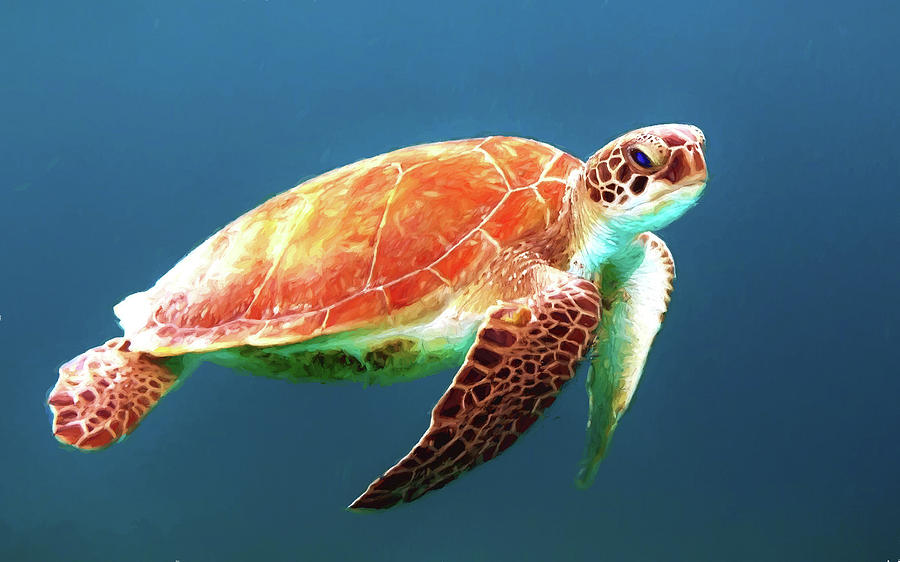

Tartaruga-marinha (Cheloniidae) é a família da ordem das tartarugas que inclui as espécies que habitam mares tropicais e subtropicais em todo o mundo. O grupo é constituído por seis gêneros e sete espécies, todas elas ameaçadas de extinção.
